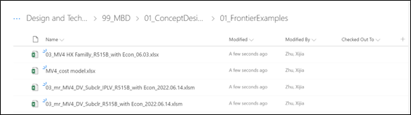

KPI Selection MR Guidance¶
1. Launch full load Multi-Run (MR) excel:¶
This step guides user how to generate a standard BOLT full load multirun excel. It is a necessary step before executing MV4 performance simulation in concept design stage.
a. After choosing MV4 model, select “Fmu Multi Run – Steady State” in “Execution” list (After right click simulation tri-angle button), and click simulation tri-angle button to generate mr.
b. If calculation fails with error message: file name confliction. It means you generate same mr file before, rename mr file under “C:\Users\zhux2\impact\workspaces\Polaris\custom_resources\fmu_mr\mr” ;

c. After calculation, excel multirun is generated and activated:
d. Check result in column 14:
(1) If it shows “Solved” in the top, and values is full in other cells. -> Ready for using;
(2) If it shows “Unsolved”, and no value -> click “Go” button to start calculation:
(3) If it shows “Solved” in the top cell, but empty in other cells. Follow below steps to update: Select “launch Jupyter” in dropdown list, and click “Go” -> In jupyter interface, choose “Specified” and input “14”, and click “Reset columns” in sequence; -> choose “Specified” and input “14”, and click “Run MR” in sequence;


e. Keep column 14 for future use;
2. Launch IPLV MR:¶
This step tells user how to generate a standard BOLT IPLV excel multirun. Comparing with full load multirun, IPLV multirun only need user input water temperature condition, and calculate water flow rate automatically for part load.
It is a necessary step before executing MV4 performance simulation in concept design stage.
a. Select “Doe Generator & Rating Calculations” in “Execution” list (After right click simulation tri-angle button), and click simulation tri-angle button to start IPLV setting.
b. If calculation fails with error message: file name confliction. It means you generate same mr file before, rename mr file under “C:\Users\zhux2\impact\workspaces\Polaris\custom_resources\fmu_mr\mr” ;
c. A new DOE dialogue and an excel MR are opened. Leave excel MR, in DOE dialogue, follow below three steps: Rating calculations -> IPLV -> AHRI 550_2015, and click “Generate Calculation Sheet” to finish IPLV setting in MR file. This dialogue will be closed automatically after this step.
d. IPLV settings will be transferred to excel mr, 15_A-15_D standards for IPLV 4 conditions:
Water flow rate and temperature settings are changed according to AHRI IPLV requirements:
e. Check result in column 14:
(1) If it shows “Solved” in the top, and values is OK in other cells. -> Ready for using;
(2) If it shows “Unsolved”, and no value click “Go” button to start calculation:
(3) If it shows “Solved” in the top cell, but empty in other cells. Follow below steps to update: Select “launch Jupyter” in dropdown list, and click “Go” -> In jupyter interface, choose “Specified” and input “14”, and click “Reset columns” in sequence; -> choose “Specified” and input “14”, and click “Run MR” in sequence;

f. Copy 15_A to 15_D (Before simulation) in other columns, to do multi- IPLV calculations.
3. Add customized fmu and refrigerant path:¶
Usually, user need move excel MR to a new location, instead of default location. Then it is necessary to change fmu and refrigerant path in MR, to keep simulation ability.
a. In row 1 column 5, change fmu location to absolute path: C:\Users\zhux2\impact\workspaces\Polaris_IPLV\model_executables \system19mv_lumped_mv4_dv_subclr_20220522_094919_51301d2\model.fmu

b. In row 1 column 7, change refrigerant path to absolute path: C:\Users\zhux2\impact\libraries\BOLT 1.24.0\InternalLibrary\Media\Refrigerant\MediumSourceFile_dll\win64;
C:\Users\zhux2\impact\libraries\CustomRefrigerantR515B 2.1
• Separate different paths by using “;”.
• First path for default refrigerants, second path for customized refrigerants, e.g., R515B.
4. Create input and output stickies:¶
BOLT excel MR provided more details by thousands of parameters for a simple chiller system even basic view is selected. Most time, we do not need focus on all of them, so input and output stickies can be added in front of parameters as a filter condition, then we can fast get system key parameters.
a. Confirm what type of MR you are using, and get module.
Click here to get module in sharepoint -> DV subcoolder+flashtank;
Click here to get module in sharepoint -> MV3 subcooler + BPHE;

b. Open module, copy stickies in column 1, column 2 and paste to the excel you want to operate: Suggest copy from row 5, and paste as value only, to avoid any format error.
c. Click filter button in row 4 to filter parameters by inputting conditions. Click “GO” to start simulation multirun.
d. Suggest take use of column 14, set up cell links to input conditions. Copy column 14 with format to columns needs be simulated, these new columns will automatically get multi - KPI cases information.
e. After simulation, copy output parameters from mr file to excel data summary file for visualization. Better to set up cell links, then all other columns output information will be captured.
5. Tubing name in BOLT¶
a. Necessary to convert EDR tubing name to Bolt name before executing calculation, find below comparison table:
6. MR tips¶
a. In mr, engine will give default input value from column 13 for new cases if input is not specified.
b. Use “Reset columns” first before executing simulation for solved cases.
c. Not allow to enable re-run by only changing status from “Solved” to “Unsolved”.
d. Support inherit from father column(Need original unsolved) by copying whole column.
e. MR will always calculate cases from left to right, without neglecting blank columns.